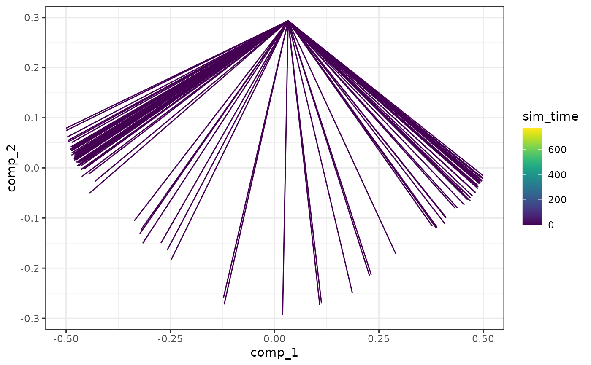
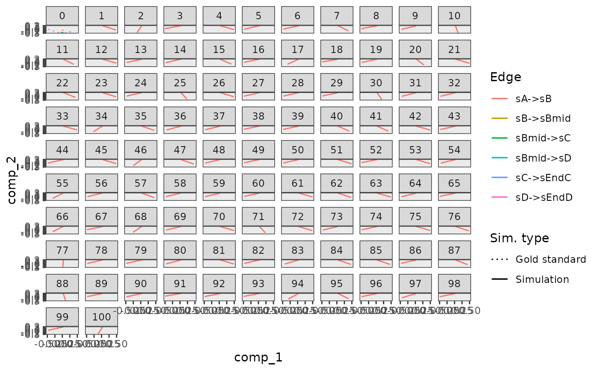
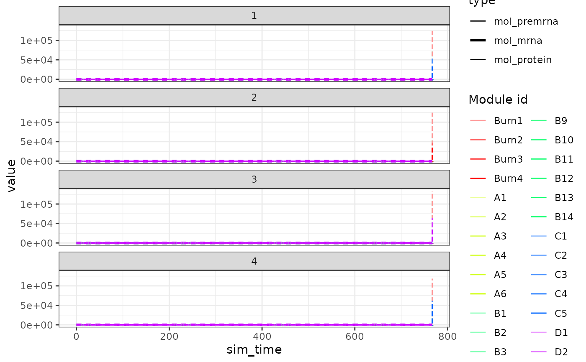

generate_cells() runs simulations in order to determine the gold standard
of the simulations.
simulation_default() is used to configure parameters pertaining this process.
generate_cells(model)
simulation_default(
burn_time = NULL,
total_time = NULL,
ssa_algorithm = ssa_etl(tau = 30/3600),
census_interval = 4,
experiment_params = bind_rows(simulation_type_wild_type(num_simulations = 32),
simulation_type_knockdown(num_simulations = 0)),
store_reaction_firings = FALSE,
store_reaction_propensities = FALSE,
compute_cellwise_grn = FALSE,
compute_dimred = TRUE,
compute_rna_velocity = FALSE,
kinetics_noise_function = kinetics_noise_simple(mean = 1, sd = 0.005)
)
simulation_type_wild_type(
num_simulations,
seed = sample.int(10 * num_simulations, num_simulations)
)
simulation_type_knockdown(
num_simulations,
timepoint = runif(num_simulations),
genes = "*",
num_genes = sample(1:5, num_simulations, replace = TRUE, prob = 0.25^(1:5)),
multiplier = runif(num_simulations, 0, 1),
seed = sample.int(10 * num_simulations, num_simulations)
)A dyngen intermediary model for which the gold standard been generated with generate_gold_standard().
The burn in time of the system, used to determine an initial state vector. If NULL, the burn time will be inferred from the backbone.
The total simulation time of the system. If NULL, the simulation time will be inferred from the backbone.
Which SSA algorithm to use for simulating the cells with GillespieSSA2::ssa()
A granularity parameter for the outputted simulation.
A tibble generated by rbinding multiple calls of simulation_type_wild_type() and simulation_type_knockdown().
Whether or not to store the number of reaction firings.
Whether or not to store the propensity values of the reactions.
Whether or not to compute the cellwise GRN activation values.
Whether to perform a dimensionality reduction after simulation.
Whether or not to compute the propensity ratios after simulation.
A function that will generate noise to the kinetics of each simulation.
It takes the feature_info and feature_network as input parameters,
modifies them, and returns them as a list. See kinetics_noise_none() and kinetics_noise_simple().
The number of simulations to run.
A set of seeds for each of the simulations.
The relative time point of the knockdown
Which genes to sample from. "*" for all genes.
The number of genes to knockdown.
The strength of the knockdown. Use 0 for a full knockout, 0<x<1 for a knockdown, and >1 for an overexpression.
A dyngen model.
dyngen on how to run a complete dyngen simulation
library(dplyr)
#>
#> Attaching package: ‘dplyr’
#> The following objects are masked from ‘package:stats’:
#>
#> filter, lag
#> The following objects are masked from ‘package:base’:
#>
#> intersect, setdiff, setequal, union
model <-
initialise_model(
backbone = backbone_bifurcating(),
simulation = simulation_default(
ssa_algorithm = ssa_etl(tau = .1),
experiment_params = bind_rows(
simulation_type_wild_type(num_simulations = 4),
simulation_type_knockdown(num_simulations = 4)
)
)
)
# \donttest{
data("example_model")
model <- example_model %>% generate_cells()
#> Warning: x or y has vectors with zero standard deviation; consider setting use_nan = TRUE
#> Warning: Simulation does not contain all gold standard edges. This simulation likely suffers from bad kinetics; choose a different seed and rerun.
#> Warning: x or y has vectors with zero standard deviation; consider setting use_nan = TRUE
plot_simulations(model)

plot_gold_mappings(model)

plot_simulation_expression(model)

# }